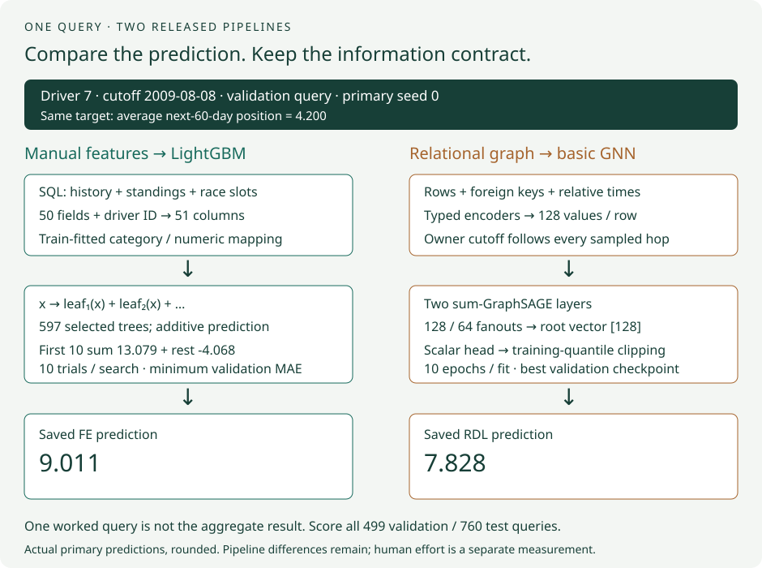
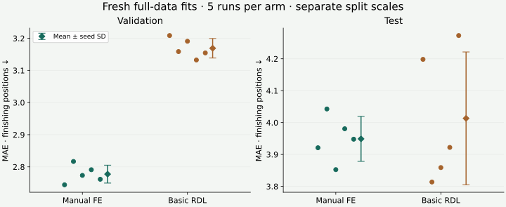
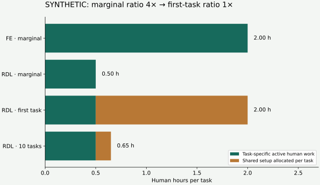

Year 4 · Quarter 4 · Lesson 155
Manual features vs RDL: compare quality and human effort
1 · A good score does not tell you how much work it took¶
Reading route. Match the queries → compare complete pipelines → inspect paired errors → separate human and machine time → bound the claim.
Your win: produce a comparison that answers two separate questions: how accurate were the predictions, and how much human work was observed? Read the core lesson in about 25 minutes; use a separate session for the notebook and prospective effort log.
Lesson 154 assembled the portfolio without filling missing comparisons. It left us with two completed test tasks, an incomplete recommendation run, and no fresh matched manual-feature baseline in that report. Today we add one fresh matched case: rel-f1/driver-position. The other gaps remain visible.
Our mission is to test whether relational learning unlocks useful predictive signal without repeated manual feature design. That claim has two parts. A model-score replay can test predictive quality. It cannot recover the hours someone spent understanding a schema or inventing features.
Prerequisites, recalled here: a query is an entity and a prediction cutoff; the cutoff says when its information must be available. Validation selects a model before test scoring. MAE, mean absolute error, averages abs(target − prediction) over queries; lower is better. A seed sets pseudorandom choices for a training run. Repeated seeds measure one kind of variability on the same data.
2 · Put both complete pipelines on the same query table¶
For this task, each target is a driver's average finishing position over the next 60 days. Both arms use all 7,453 training, 499 validation and 760 test queries. Those labels are independently reconstructed from raw race results before fitting. Matched means the same task, target definition, query population, split and scoring rule.
A hyperparameter is a setting chosen outside the weight-fitting loop, such as tree depth or learning rate. A checkpoint is saved neural-network weights. A fanout caps sampled neighbors at a graph hop; the root is the driver whose prediction we read.
The FE arm uses the researcher's released SQL: 50 engineered fields plus numeric driver ID. SQL is the language used to join tables and compute features. One field retrieves historical driver standing; another looks at a scheduled upcoming circuit. A train-fitted encoder turns the resulting row into the matrix accepted by LightGBM, a sum of decision trees. Each search tries 10 hyperparameter settings and selects the lowest validation MAE; it then refits that setting on training rows.
The RDL arm converts table rows into graph nodes and foreign-key relationships into edges. Typed row encoders produce 128-dimensional vectors. Two GraphSAGE layers aggregate sampled neighbors, while time features express how old each row is relative to its owner's query cutoff. A scalar head predicts the finishing-position target. Ten full epochs are run; the earliest strictly best validation checkpoint is restored for scoring. The released evaluator clips predictions to the training-target 2nd/98th percentiles.


Trace the pictured query. For driver 7 at the 2009-08-08 cutoff, the target is 4.200. The first ten FE trees sum to 13.079; the remaining trees add −4.068, giving 9.011 after rounding. The basic GNN predicts 7.828. RDL is closer on this one validation query. Section 3 scores the complete query populations; one favorable example cannot establish an overall advantage.
Held fixed: full query populations, temporal split, labels and MAE. Varied: the entire released pipeline—features, preprocessing, model and search procedure. Five full runs per arm retain every trial and selection trace. The visible implementations include SQL, graph construction, model, training loop and search; the pinned library kernels are dependencies.
Scope check. This is not an isolated architecture experiment. FE uses train-fitted preprocessing; the released GNN computes database statistics through the test cutoff. FE has strict-past history joins; the sampler permits times equal to the query cutoff. Schedule-publication and mutable-attribute histories are unavailable. The protocol ledger preserves these limits.
The paper's Table 7 provides the basic-GNN target. Its manual-FE study is a different comparison: Figure 3 regression uses a boosted GNN. We execute the released FE recipe against the basic GNN and do not relabel that as reproducing Figure 3.
3 · Compare errors only after matching identities¶
Worked example, synthetic. Ada has two queries, at cutoffs 10 and 20, with targets 4 and 8. FE predicts 3 and 6; RDL predicts 6 and 8. Their errors are [1, 2] and [2, 0]. FE MAE is 1.5; RDL MAE is 1.0. The benefit FE MAE − RDL MAE is +0.5 finishing positions, favoring RDL. RDL still loses on the first query.
The same entity appears twice, so joining on driver ID alone is ambiguous. Use (driver_id, cutoff) and reject duplicate or missing keys. Reversing prediction row order must leave the result unchanged.
Lab task 1 — paired_losses. Align both prediction sets to the full target key set. Reject invalid evidence, compute each query's two absolute errors, and return their signed difference. The actual report will call your function on every saved prediction pair.
| Split | FE MAE mean ± seed SD | Basic RDL MAE mean ± seed SD | FE − RDL MAE |
|---|---|---|---|
| val | 2.777330 ± 0.027905 | 3.168988 ± 0.030376 | -0.391658 |
| test | 3.948917 ± 0.070469 | 4.013141 ± 0.208250 | -0.064225 |


Measured result: FE's test MAE is 3.9489, compared with 4.0131 for basic RDL. The signed RDL benefit is -0.0642 finishing positions. The driver-cluster conditional 95% interval is [-0.3123, +0.1730]. It crosses zero; the point estimate favors FE, but this does not establish superiority or equivalence. The GNN mean is within the frozen ±0.20 descriptive band around Table 7's 4.022.
The plot shows each run and its arm's mean±sample seed standard deviation. Standard deviation describes variation among these five runs; it is not uncertainty across databases. Matching seed numbers do not make FE search randomness and neural initialization a paired random experiment. The comparison pairs query losses instead.
A second uncertainty view resamples entire drivers, keeping each driver's cutoff queries together. It uses the per-query error averaged across the five fits. This cluster bootstrap gives a conditional 95% interval for this evaluation population. It does not account for every shared race/time effect or training uncertainty. Prior lessons already exposed this test split, so treat the result as a reproduction comparison, not untouched confirmatory evidence.
4 · Decide which clock answers the human-effort question¶
The RelBench human study, Section 6, follows exploration, feature ideation, implementation, tabular fitting and optional analysis. Exploration is capped at 4 hours; feature ideation at 1 hour. The reported effort excludes reusable infrastructure and optional post-hoc analysis. Its aggregate hours, 12.3 for FE versus roughly 0.5 for RDL, describe that study; they are not measurements of our work.
Marginal effort means additional active human work for the task, given an existing toolkit. Shared setup means work that can support multiple tasks, such as building a trainer. Machine runtime means how long computation runs. A one-hour fit can require five minutes of active human work; adding both as “human hours” double-counts the wrong resource.


Worked example, synthetic. FE needs 2 hours of active task work; RDL needs 0.5 hours. The marginal ratio is 2 / 0.5 = 4×. RDL uses 100 × (1 − 0.5 / 2) = 75% less active time. If RDL also needs 1.5 hours of shared setup and FE has none in this example, first-task total effort is 2 hours for each: ratio 1×. Spreading that setup across 10 tasks gives 0.65 hours per RDL task and about 3.08×. All three statements can be arithmetically correct; they answer different questions.
Predict before interacting: if the accuracy values stay fixed, can including shared setup change the apparent effort advantage?
Lab task 2 — summarize_effort. Validate timezone-aware closed sessions. Separate human marginal hours, human shared hours and machine hours. Reject duplicate IDs, overlapping active human intervals, mixed task/participant/assistance policies and unsupported completeness claims. Coverage has three states: complete, partial, or not observed. An empty log is missing evidence, never zero effort.
Lab task 3 — effort_ratio. Require two complete observed marginal-human totals and positive denominators. Return a missing ratio for incomplete or absent evidence. Explain why a 4× ratio corresponds to 75% less time, not 400% less time.
5 · Log prospectively, then write the claim you can defend¶
Prospective means recording sessions as the work happens, rather than estimating old hours after seeing a favorable result. The notebook writes a blank JSON log and shows how to add closed sessions. Record task, method, participant, assistance policy, phase, marginal/shared scope, human/machine kind, start and end. Pause human logging while computation runs unattended. Record active debugging and validation work, not only successful feature edits. Declare your finish criterion before either arm—for example, a complete validated prediction packet under its fixed protocol.
Record assistance explicitly: unaided, documentation-only, or agent-assisted under the same declared policy. Agent generation time is not a human session. Reading or adapting an existing SQL solution measures adaptation effort, not independent feature ideation. If you learned the database while doing FE first, the later RDL attempt benefits from that knowledge. A personal comparison is descriptive and order-confounded; it does not recreate the expert study or establish a population-wide productivity effect. To study that effect, use a separately planned human protocol with comparable expertise, task allocation and order controls.
The author log is NOT_OBSERVED. No human-hour ratio is supplied for the actual trained models. The synthetic widget teaches arithmetic; the real score table teaches predictive comparison. Combining them would fabricate an accuracy-versus-effort result. Report the two dimensions side by side; do not divide a bounded classification score by hours and average it with regression MAE.
Named experiment: L155 rel-f1/driver-position — released manual-FE pipeline versus basic RDL. The report replays 12,590 held-out predictions. The complete fresh training gates are separate and off by default; the author has run the primary full-data experiment. Both gates require their documented pinned runtimes: FE requirements and GNN requirements, plus the native GPU wheel recipe in the Modal operator. The reference notebook repeats the full pipelines for execution validation; those repeats never enter the primary means.
Author evidence: all 8,712 labels and 50 engineered fields were independently reconstructed. All 12,590 held-out predictions were rescored; FE tree replay maximum error 0, GNN original-output maximum difference 2.86e-06. Every GNN seed retained 640 nonfinite entries in its first backward gradients. That is an unresolved source behavior, not a clean optimization-health result. The full pipeline results remain reportable with this limitation.
Budget: primary GNN worker-body estimate $0.056940; local FE cloud spend $0. Current reserved worker resources plus the $3 overhead allowance total $5.844072, under the $10 aggregate cap. These are resource estimates/reservations, not an itemized invoice. Budget.
The separate full GPU notebook gate passed: five additional complete fits, 6,295 independently checked predictions. Excluded from primary means.
The separate full FE notebook gate passed: five additional complete fits, 6,295 independently checked predictions. Excluded from primary means.
The portfolio now has one matched FE/RDL task. Classification FE remains NOT_RUN; recommendation remains INCOMPLETE with test NOT_RUN. A result on one F1 task cannot fill the Year 4 requirement for comparisons on at least three tasks. This lesson adds evidence rather than declaring that requirement met.
6 · Exit: defend both the measured result and the empty cell¶
Student notebook · Worked notebook · Teacher solution · Report · Reference · Reproduction contract.
Export your regenerated quality report and either a validated real effort log or an explicit NOT_OBSERVED result. Write 250–400 words explaining: what was held fixed, the direction and units of the measured quality difference, what the uncertainty interval covers, which effort clock matches the paper, and what remains missing from the thesis claim. Include the Figure 3/basic-GNN distinction.
Review rubric: query comparability, computation, effort accounting, evidence boundaries and conclusion—0–2 points each; readiness requires 8/10 with no zero, reviewed by the teaching agent. Author execution leaves PENDING_WRITTEN_DEFENSE. Tomorrow reconstruct 4× versus 75% without notes. In one week, audit an effort log containing an overlapping session and missing task work.
Ask the agent follow-up questions about any unclear join, time category or reproduction boundary. Lesson 156 will audit temporal leakage across the pipeline; today's missing arrival histories remain a question for that audit, not a solved problem.